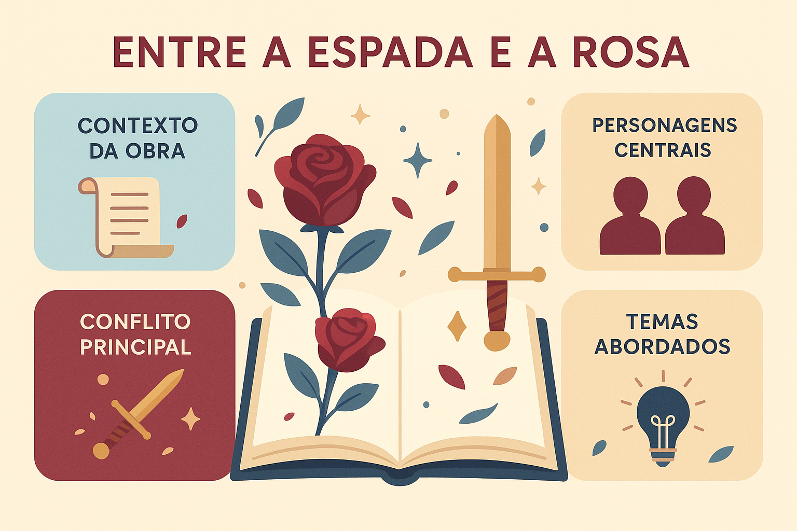

Entre a Espada e a Rosa — Síntese, Análise Completa e Questões (Obra Obrigatória PAES 2026)
Contextualização da autora: breve biografia, contexto literário, importância
Marina Colasanti (1937–) é uma escritora ítalo-brasileira cuja obra atravessa poesia, conto, crônica e literatura infantojuvenil. Vivendo a infância entre África, Itália e Brasil, desenvolveu uma sensibilidade estética marcada pelo deslocamento, pela observação do cotidiano e pela imaginação simbólica.
Inserida na literatura brasileira contemporânea, destaca-se pela renovação dos contos de fadas, pela força metafórica e pela presença do olhar feminino. Suas obras dialogam com temas universais — liberdade, identidade, afeto, opressão — e apresentam uma linguagem altamente poética, precisa e evocativa. Colasanti é reconhecida como uma das autoras mais importantes da atualidade, tendo recebido diversos prêmios, como o Jabuti e distinções da FNLIJ.
Visão geral da obra
A coletânea Entre a Espada e a Rosa reúne 21 contos estruturados no formato de contos de fadas modernos. São narrativas curtas, densas e simbólicas, que usam elementos do maravilhoso — princesas, castelos, viagens, metamorfoses — para problematizar questões contemporâneas.
A obra apresenta uma linguagem minimalista e metafórica, cenários arquetípicos e personagens sem nome, o que favorece leituras simbólicas. Cada conto funciona como uma pequena parábola, convidando o leitor à reflexão sobre temas sociais e existenciais.
Resumo de alguns contos principais
“Entre a Espada e a Rosa”
No conto que dá título à obra, um príncipe precisa escolher entre dois objetos simbólicos: uma espada, representando força e enfrentamento, e uma rosa, símbolo de delicadeza e sensibilidade. A narrativa trabalha a tensão entre masculinidade tradicional e afeto, mostrando como a construção da identidade depende de escolhas marcadas pela dualidade entre poder e vulnerabilidade. Esse conto é frequentemente cobrado por sua profundidade simbólica.
“A Moça Tecelã”
Embora publicado originalmente em outra coletânea, dialoga diretamente com os temas do livro: autonomia, criação e opressão. A protagonista tece sua própria vida até ser aprisionada em um casamento controlador, perdendo a liberdade de criar. Tornou-se um dos contos mais simbólicos da autora.
“A Dama e o Cavalheiro”
Explora idealização amorosa, ausência e expectativa. Os personagens parecem viver mais de imaginação do que de realidade, revelando fragilidades do desejo e da espera.
“O Visitante”
Narrativa marcada pelo mistério: um visitante inesperado invade o cotidiano, trazendo medo, desestabilização e transformação. O conto trabalha metáforas do desconhecido e do imprevisível.
“A Casa de Paredes Transparentes”
Uma crítica à falta de privacidade e à vigilância constante. A casa sem paredes cria um ambiente de exposição absoluta, aproximando-se de debates modernos sobre redes sociais e controle social.
Análise literária
Temas centrais
Identidade, amadurecimento, autonomia feminina, liberdade e opressão, relações de poder, amor, violência simbólica, transformação, fragilidade humana e autoconhecimento.
Motivos recorrentes
Tecelagem, objetos simbólicos (espada, rosa, chaves), metamorfoses, viagens, janelas, luz e sombra, torres e castelos como forma de aprisionamento.
Personagens
Arquetípicos, anônimos e simbólicos. Muitas figuras femininas apresentam força e complexidade, propondo leituras críticas sobre papéis de gênero.
Narrador e foco
Predomina o narrador onisciente, com estilo próximo ao dos contos maravilhosos, mas com postura poética e reflexiva, convidando o leitor à interpretação.
Tempo e espaço
Indeterminados, como nos contos tradicionais. A função principal não é situar, mas gerar sentidos. Ambientes como florestas, castelos e casas metafóricas expressam estados psicológicos.
Estilo e marcas estéticas
Linguagem poética, condensada e simbólica; metáforas constantes; ritmo leve e musical; economia de palavras; atmosfera fabulística; releitura feminista e contemporânea do maravilhoso.
Relação com o vestibular
A obra permite explorar análise simbólica, crítica social, leitura poética, intertextualidades com contos clássicos e discussões sobre identidade e liberdade. Os vestibulares costumam cobrar:
- interpretação de símbolos (rosa, espada, tecelagem, casa transparente);
- identificação de temas sociais e existenciais;
- características do conto contemporâneo;
- função estética da linguagem poética;
- comparação com contos de fadas tradicionais.
Possíveis temas cobrados e transversais
- amadurecimento e escolhas pessoais;
- autonomia feminina e crítica ao patriarcado;
- violência simbólica e psicológica;
- liberdade versus aprisionamento;
- o maravilhoso como crítica social;
- identidade e construção do sujeito.
Quiz — Entre a Espada e a Rosa
Questão 1
O símbolo central do conto “Entre a Espada e a Rosa” expressa principalmente:
Questão 2
O uso de personagens arquetípicos e cenários indeterminados na obra tem como função:
Questão 3
Marina Colasanti costuma empregar linguagem poética e condensada para:
Questão 4
O conto “A Casa de Paredes Transparentes” critica principalmente:
Questão 5
Entre as marcas estéticas de Colasanti, destaca-se:
Conclusão e orientações para estudo
Ao estudar Entre a Espada e a Rosa, concentre-se nos símbolos, nas metáforas, na crítica social implícita e no diálogo com contos tradicionais. O olhar poético da autora exige uma leitura atenta, capaz de perceber nuances, implicações e metáforas que constroem o sentido da obra.
Explore Outros Conteúdos
Continue seus estudos acessando outras seções do site Mestre Kira: